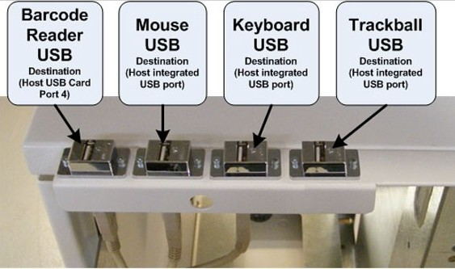

Operating Documentation
Direction 5321294, Rev# 3
GOC6 Service Methods
Operating Documentation |
| Required Persons | Preliminary Reqs | Procedure | Finalization |
|---|---|---|---|
| 1 | Timing Not Applicable | Timing Not Applicable | Timing Not Applicable |
This procedure describes and illustrates the steps necessary to replace the Keyboard, Mouse or Trackerball. Since the processes for replacing these parts are so similar, the Keyboard, Mouse and Trackerball replacement instructions have been combined in this procedure. For all replacement parts see the GOC6 Parts List.
| Last Revised: | 07 July 2008 |
| Item | Qty | Effectivity | Part# | Manufacturer | |
|---|---|---|---|---|---|
| Standard FE Toolkit | 1 | - | - | - | |
| Item | Qty | Effectivity | Part# | Manufacturer | |
|---|---|---|---|---|---|
| Keyboard | 1 | - | - | - | |
| Mouse | 1 | - | - | - | |
| Trackerball | 1 | - | - | - | |
| FOLLOW ALL REQUIRED SAFETY AND PPE PROCEDURES CUSTOMARY FOR YOUR ORGANIZATION WHEN WORKING ON THIS PRODUCT. | |
| Condition | Reference | Eff |
|---|---|---|
Access to the Operator Console Keyboard Tabletop and Upper Bulkhead Panel is required. Make sure adequate space is available on Console table tops | - | - |
Only trained service personnel should service the GE CT Scanner. | - | - |
Select one of the following methods to power off the Operator Console:
If applications are running, click the Shut Down icon and select Shut Down.
If applications are down, open a Unix Shell using the Toolchest. Type: {ctuser@hostname} halt. Press <Enter>.
The Operator Console monitor will display a ‘System Halted’ message when it is acceptable to power off the Operator Console.
Power OFF the Operator Console at the front panel switch. (See Illustration 2.)
Illustration 1: Console Power Switch

Perform prescribed Lockout/Tagout procedure. For added protection, disconnect the Twist-N-Lock Main Power Cable from rear of console.
Remove the USB cable connection from the Console’s Upper Bulkhead Panel for the Keyboard, Mouse, or Trackball being replaced.
Remove the Keyboard, Mouse, or Trackball and set aside.
Place the replacement Keyboard, Mouse, or Trackball on the Operator Console.
Plug in Keyboard, Mouse, or Trackball cable in the USB connector at the Rear Bulkhead Panel.
Illustration 2: Upper Bulkhead Panel Connections

| NOTE: | Console design requires specific USB locations ( Illustration 2) for proper operation. |
Power ON the Operator Console at the console front panel switch.
Visually verify Keyboard, Mouse, or Trackball work as expected with the CT Applications.
No other verifications required.
| NOTE: | This procedure assumes that like type Keyboard, Mouse, or Trackball has been used in the replacement process. If Keyboard language type or different style Mouse or Trackball are used, there may be Operating Software and/or System Configuration issues. Use GE Healthcare recommended spare parts. |
| NOTE: | Keyboard and Mouse functionality is readily apparent and easy to verify proper operation. Trackball functionality is not so readily apparent since functions vary based on Application usage. Refer to the system's Technical Reference Guide for Trackball functionality description. |
No finalization required.